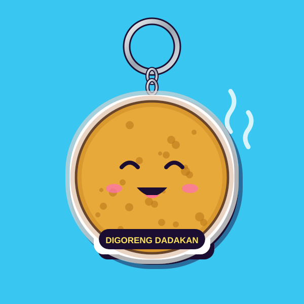

Halo, kami GANCI.
Berawal dari kunci kos yang selalu hilang di tas. Solusinya: kasih gantungan yang besar, lucu, dan susah diabaikan.
GANCI dibuat tahun 2025 oleh dua mahasiswa di Salatiga yang hobi menggambar jajanan. Gambar pertama kami tahu bulat, dicetak sepuluh biji buat teman kos. Seminggu kemudian pesanan datang dari teman-temannya teman.
Semua gambar kami buat sendiri. Kami cetak di akrilik bening 3 mm dengan tinta UV di dua sisi, lalu pinggirannya dipotong laser supaya halus dan nggak melukai tangan.
Janji kecil kami
- Gambar sesuai foto. Yang kamu lihat di website, itu yang datang.
- Ring anti karat. Pakai stainless, bukan besi biasa yang cepat hitam.
- Dibalas cepat. Admin aktif tiap hari jam 09.00–21.00.
- Nama usaha
- GANCI (usaha perseorangan)
- NIB
- 2810260045517
- Alamat produksi
- Jl. Hasanudin No. 17, Mangunsari, Kota Salatiga 50721
- Berdiri
- 2025
